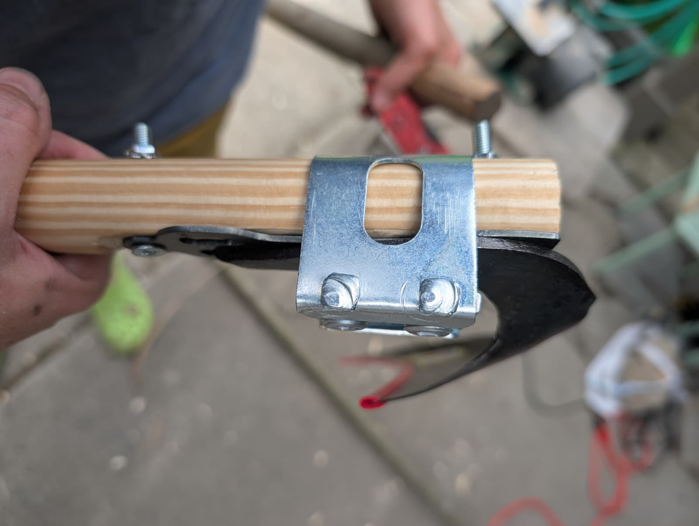

I created a scythe plate based on an old design present on Eriko Kojima and Stephen Packard's personal scythes.
A Tormach CNC Plasma cutter was used at Pumping Station 1.

I then finished the plates on a wheel grinder and drilled out a crucial counter sink on the bottom screw whole as it is essential for getting a good fit of the scythe tang.
If you are interested in purchase a scythe plate, please click here.